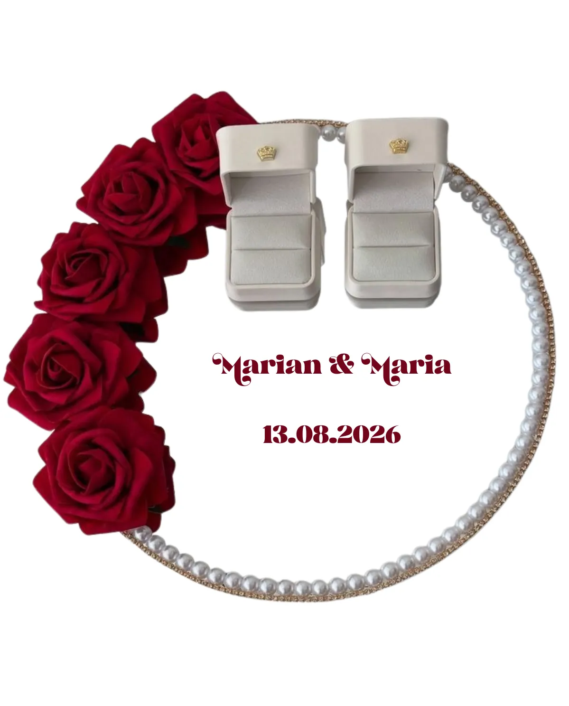

Hochzeitsballons & Brautgeschenke
Handgemacht in Bad Wörishofen, Bayern — personalisiert mit Namen des Brautpaars, Hochzeitsdatum oder Wunschtext. Lieferung persönlich in der Region oder Versand deutschlandweit ab 60 € kostenlos.
Alle Hochzeits-Produkte ansehen →



Personalisierter Hochzeitsballon aus Bayern
Für den schönsten Tag im Leben: Bei Dandelion 11:11 fertigen wir personalisierte Hochzeitsballons von Hand in Bad Wörishofen, Bayern, mit den Namen des Brautpaars, dem Hochzeitsdatum oder einem persönlichen Wunschtext.
Ob als Deko für die Hochzeitsfeier, als Geschenk für das Brautpaar oder als Überraschung für den Junggesellinnenabschied: Wir gestalten dein Ballongeschenk individuell und liefern es persönlich in der Region rund um Bad Wörishofen. Deutschlandweit ist der Versand ab 60 € kostenlos.
- Namen des Brautpaars, Hochzeitsdatum oder Wunschtext
- Handgemacht in Bad Wörishofen, Bayern
- Persönliche Lieferung in der Region oder Versand deutschlandweit
- Als Kleinunternehmer (§ 19 UStG) ohne ausgewiesene MwSt.
Materialien & Verarbeitung
Unsere Hochzeitsballons fertigen wir aus hochwertigen Latex- und Folienballons in Weiß, Gold, Roségold oder den Wunschfarben des Brautpaars. Auf Wunsch beschriften wir den Ballon mit den Initialen, dem Hochzeitsdatum oder einem kurzen Liebesspruch und kombinieren ihn mit Satinbändern und kleinen Deko-Elementen für ein elegantes Gesamtbild.
Egal ob klassisch-elegant, romantisch verspielt oder modern minimalistisch: Wir stimmen Farben und Stil auf das Hochzeitsmotto ab, sodass der Ballon perfekt zur Deko der Trauung, des Junggesellinnenabschieds oder der Hochzeitsfeier passt.
Weitere Anlässe: Geburtstagsballon · Babyparty-Ballon · Fußball-Ballon · alle Kollektionen ansehen · Dandelion Journal